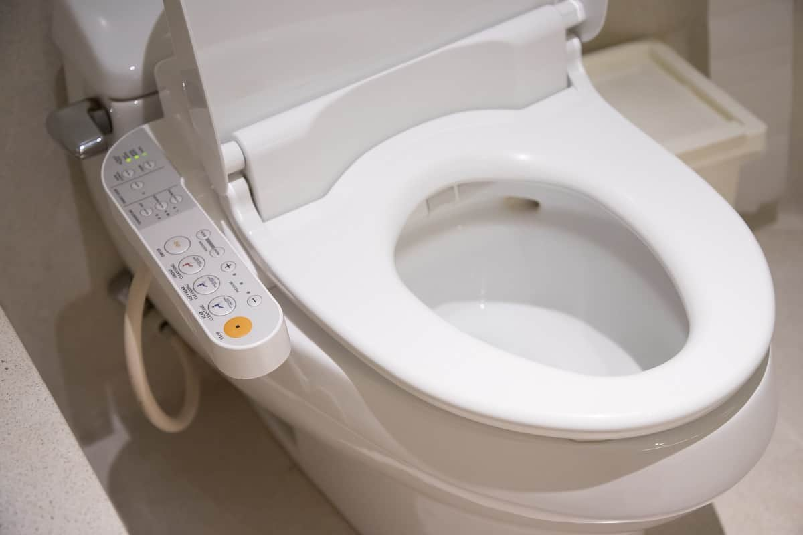
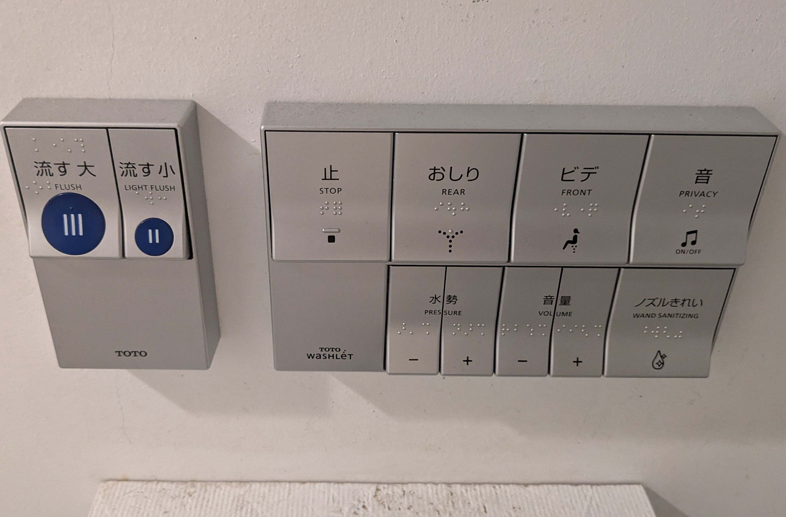
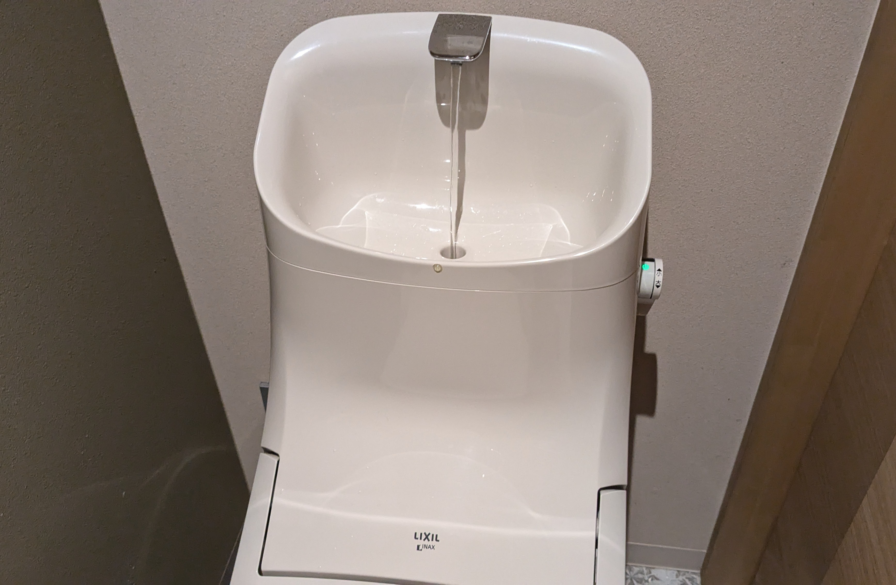
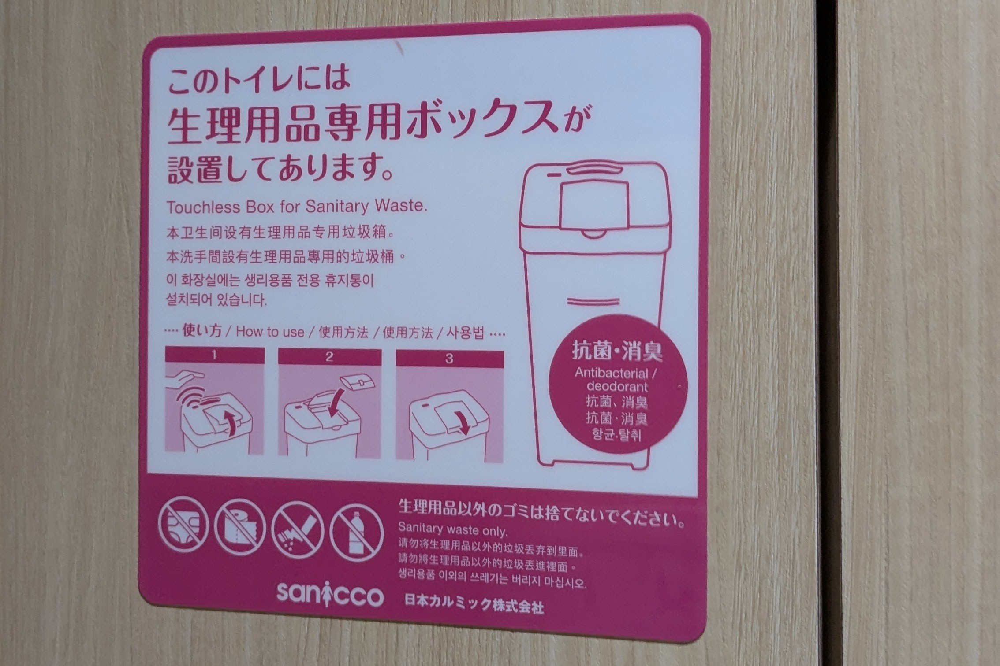
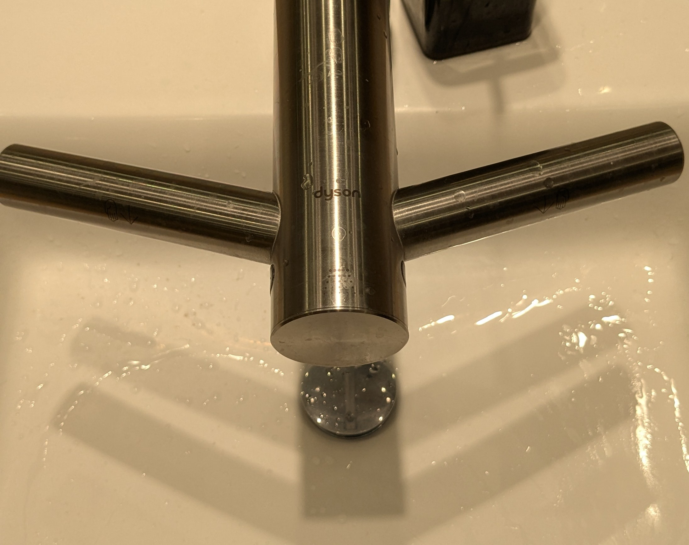

22 FEB 2025 | BY EMILY LOH
An advance Japanese bidet attached to a toilet, providing many options.
Traveling has always been a way for me to experience different cultures and technologies outside of my home country, and Japan is the perfect place for a fun learning experience. Japan’s reputation as a tech-forward country isn’t limited to their automated machines, speedy trains, and futuristic shopping where you can pay for groceries without unloading your basket. There is an endless list of technologies Japan has integrated into their daily lives and culture especially at the heart of their capital city, Tokyo. But, by far, my favorite has to be their restroom business: the bidets.
Toilets in Japan are on another level of convenience even in a random public park restroom. While most people might not think about toilet technology, Japan has made the most mundane business into an unforgettable and comfortable experience for me at every “business” visit.
Comfort From Your Toilet Seat
Traditional toilets that are still used around the world come in different shapes and sizes. While the world continues to revolve, many countries have created bidets of different styles as well. European bidets are very common, equipping many restrooms with an option of keeping clean and fresh all day long. But the bidets in Europe are often large and require additional space. Japanese bidets, on the other hand, optimize the space in a restroom stall while keeping it straightforward. I recently got a chance to indulge in as many bidets as possible in Japan. For a long trip, this was the first time I had enough time to explore the country like a local.
Bidet controls with many options at a local cafe.
Though my experience as a tourist could be very different from a local, I was able to spot restroom comfort everywhere in a cafe at a small neighborhood, a rural city’s train station, and a small local temple. Even old yellowed bidets seem to work their magic, there was almost no toilet without at least a simple bidet.
Now, let me break it down for you. A typical Japanese bidet includes the main two sprays: front and rear. These sprays often have a pressure control that allows anybody to personalize their experience. Certain bidets allow you to position the wand as well and have a wand cleaning option to keep the water wand clean. Other bidets also include the option to keep the toilet seat nice and warm, perfect for a winter night! Privacy music from devices called “Otohime” is an option too, in case the walls are too thin or you feel a little embarrassed. Sometimes the sound is automatic and super accurate, other times you can choose to turn it on. A simple water sound plays from the speaker, masking any sound coming from the stall.
Toilet installed with a small sink that dispenses reusable water after a flush to keep your hands clean.
It doesn’t stop there! High-end department stores or city central hotels often have bathrooms that include automatic toilets that have super accurate sensors for flushing. Dryer and deodorizers are a given as well, keeping the place well kept. Often, in handicap restrooms, the toilet cover even lifts automatically, requiring no extra steps for you as a user of the technology. If cleanliness is top priority, there are also UV light cleaning installed in the toilets so every time you enter the stall or leave, the toilet does a bit of cleaning to keep it fresh all day long!
The endless things that are provided just with a touch of a button on the toilet really proves to the world that Japan indeed is technologically forward and has found priority in comfort of the daily life for people of all ages, all economic statuses, and all genders.
Your Personal Space
Many public restrooms have advanced toilets but foreigners may also notice the little things that also improve the experience. Unlike the gaps in many Western restroom stalls, Japanese toilet stalls are often fully enclosed from the door to the walls, providing maximum privacy. You wouldn’t have to worry about a toddler crawling under and into your stall. And in many cases, if you do have a toddler with you, there are baby seats in the stall for you to leave your child in it while you do your business. When you’re done, just pick up your child from the seat and fold it close, leaving enough space for you and your child to move around.
For the ladies, you would be happy to see what these restrpp,s have to offer. Many malls and other large buildings keep sanitary goods stocked. These are often given at a low cost or for free! The company OiTr discourages the stigma around menstruation and provides free sanitary goods if you can watch an advertisement. Other businesses have tried similar models out such as “Toreluna” to keep a lady’s menstrual business lowkey and let them conveniently receive the product they need without hassle. For sanitary bins, many stalls have automatic ones that are silent and non disruptive. This keeps a lady’s hands away from any extra germs trash could generate and keep her business lowkey and quiet.
Instructions on how to use the automatic sanitary waste bin in Japanese, English, Chinese and Korean languages.
Items in the stall don’t end here! Some larger stalls include a changing station that allows people to conveniently stand on a little platform to change in and out of their clothes after taking their shoes off without having to walk on the floor. A greater portion of stalls include a sanitizing spray to wipe down the toilet seat before you sit on it, satisfying those who prioritize cleanliness at any time, everywhere.
Outside of these perfect stalls, many restrooms are equipped with automatic sinks and hand dryers with UV lights. You can often find these in malls or office buildings. Certain places also have pedals to turn the sink faucet on or pedals to flick open the trash can, keeping it all touch free. At places like the airport, just outside the restrooms are displays that tell passerbyers which stalls are occupied and how full the restrooms are. These allow people to move on and find other restroom areas if the place is too full. In temples or other humble businesses, you usually are greeted with cushioned bathroom slippers at the entrance of the bathroom. Keeping it clean and avoiding any nasties from shoes, the slippers allow you to use the restroom with ease and comfort.
Dyson airblade tap sink hand dryer for drying your hands immediately after wash.
It’s clear that Japanese restrooms are designed with comfort, hygiene and convenience in mind. As a tourist navigating these busy places, I can’t help but think that to them, it is not just about technology and convenience–it’s about the cultural mindset that plays into these little but daily necessities.
Japanese Culture
Japan’s advanced restroom technology isn’t just about convenience because I seem to slowly see that it is a reflection of cultural values they prioritize. Cleanliness like the streets that are rarely littered with trash and the shopping malls that are constantly vacuumed by hand vacuum cleaners. Respect for personal space and consideration for others are evident in daily life—whether it’s maintaining distance while greeting or the frequent 'sumimasen' apologies you hear everywhere. Even something as simple as a public restroom reflects how Japanese society operates as a whole.
Cleanliness is one of the most fundamental aspects of Japanese culture and you can easily see this as a visitor. Public spaces, from streets to train stations, are noticeably spotless and even sometimes shining. Restrooms are very clean as well and not just from the bidets or janitors. The light unspoken social agreement of cleanliness promotes spaces to stay as clean as people find them. Restroom users are encouraged to keep things clean with things like sanitary sprays and bathroom slippers. It’s a level of cleanliness and thoughtfulness that is rarely seen in Western bathroom cultures.
Silence is not awkward in Japan. Even beyond the restrooms, public spaces tend to be quiet. People stay silent on trains or speak softly and avoid phone calls in crowded areas. This norm extends to all areas of life even in restrooms as they have enclosed stalls and Otohime devices. And with those enclosed stalls, Japan promotes respecting personal space. Unlike Western stalls, where gaps make it awkward for some, Japanese stalls leave no room for intruders during your private business.
Japan’s restroom culture is a direct reflection of its society, promoting a clean, respectful and considerate environment even when doing business. And for a foreigner like me, it’s a beautiful first and last impression to have when visiting. I think it’s an impressive reminder of how culture can shape even small details of a society, turning every part of a local’s life into a value.
As a tourist, these experiences made me reflect on the little things I often overlook in my own daily routine. The thoughtfulness embedded in something as simple as using a restroom made me appreciate how much Japan prioritizes the comfort and convenience of its people. It made me wonder: what if more places around the world adopted this level of care? Would public spaces feel safer, cleaner, and more inclusive? With every visit to Japan, I’ve come to see a new perspective. Japan is proof that technology and human-centered design can come together to create something meaningful. I believe it’s not just the futuristic gadgets or the advanced infrastructure that makes Japan special, but the way they seamlessly integrate respect and hospitality into every aspect of their world.